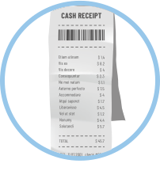

Elaboración de la factura.
1.1 Documentos considerados soportes.
Los documentos de soporte son aquellos que están anexos o adjuntos a la cuenta de cobro y/o factura y que son exigidos por las Entidades Responsables del Pago como soporte de la prestación de los servicios de salud, según la Resolución 3047 de agosto 14 de 2008 y complementados con la Resolución 416 de 2009, la cual lo reglamenta.
Como Soportes podemos encontrar
-
Denominación y definición de soportes.
-
Listado estándar de soportes de facturas según tipo de servicio para el mecanismo de pago por evento.
-
Listado estándar de soportes de las facturas para el mecanismo de pago por caso, conjunto integral de atenciones, paquete o grupo relacionado por diagnóstico.
-
Listado estándar de soportes de las facturas para el mecanismo de pago por capitación.
Registros Individuales de Prestación de Servicios de Salud – RIPS
Los registros individuales de prestación de servicios de salud (RIPS) contienen la información mínima de datos sobre prestaciones de salud. Este dato incluye: La identificación del prestador de salud, la identificación de quien recibe la atención, el diagnostico, etc.
Autorización de prestación de servicios
Es un requisito netamente administrativo de las Entidades Responsables del Pago, para facilitar y controlar el gasto y la demanda de servicios, permitiendo legalizar la prestación de servicios según el acuerdo de voluntades suscrito por las entidades prestadoras de salud.
Historia clínica, órdenes médicas y resultados de exámenes y procedimientos
La historia clínica es un documento legal de requerimiento obligatorio, que debe ser diligenciado por cada uno de los prestadores de servicios de salud. En este documento se deben registrar las condiciones de salud del paciente. Es un documento privado, que solo puede ser visualizado por terceros si se sigue u n proceso legal, previa autorización de las entidades responsables.
Las Entidades Prestadoras de Servicios de Salud deben ser rigurosas en su manejo y el de los documentos que la integran, asegurando el acceso exclusivo del Personal de Salud autorizados por la ley en la Resolución 1995 de 1999 Artículo 14.
Especificación de datos para la epicrisis
Se refiere al resumen de la historia clínica, que será utilizado como soporte de la factura. Debe contar con unos datos mínimos como son:
-
Datos de identificación del paciente.
-
Datos de ingreso.
-
Datos de evolución en el estado de salud del paciente.
-
Datos de egreso o salida del paciente.
-
Datos de quien elaboro la epicrisis.
Soportes de usuarios especiales
Estos soportes son los que se deben adjuntar diferentes a la factura y el RIPS según acuerdo de voluntades entre las entidades responsable de la prestación del servicio.
Accidentes de trabajo y enfermedad laboral
La Ley los define como todo suceso repentino que sobrevenga por causa o con ocasión del trabajo y que produzca en el trabajador una lesión orgánica, una perturbación funcional, invalidez o la muerte. Accidente de Trabajo: Artículo 9, Decreto 1295 de 1994.
Accidentes de tránsito
De acuerdo con el artículo 2° del código Nacional de Tránsito Ley 769 del 2002, se define Accidente de tránsito como: evento generalmente involuntario, generado al menos por un vehículo en movimiento, que causa daños a personas y bienes involucrados en el e igualmente afecta la normal circulación de los vehículos que se movilizan por la vía o las vías comprendidas en el lugar o dentro de la zona de influencia del hecho.
Eventos catastróficos y terroristas
De acuerdo con el Decreto 056, art. 3 Evento catastrófico de origen natural. Para efectos del presente decreto son eventos catastróficos de origen natural los sismos, maremotos, erupciones volcánicas, deslizamientos de tierra, inundaciones, avalanchas, vendavales, huracanes, tornados, incendios y rayos que producen daños en la salud o la muerte de personas. Eventos terroristas. Para efectos del presente decreto se consideran eventos terroristas los provocados con bombas u otros artefactos explosivos, los causados por ataques terroristas a municipios, así como las masacres terroristas, que generen a personas de la población civil, la muerte o deterioro en su integridad personal.
Acreditación de la condición de víctima
Así mismo para realizar una reclamación se debe presentar una serie de evidencias que me acrediten que soy víctima, bien sea de eventos terroristas o catastróficos, como:
-
Censo elaborado por los Comités Locales y/o Regionales de Emergencias a los que se requiere el Decreto 919 de 1989.
-
Se deben diligenciar la totalidad los Formularios descritos en el Decreto 3990 de octubre 17 de 2007 y reglamentados en la Resolución 1915 de agosto 29 de 2008:
A continuación, ingreso a la RESOLUCIÓN NÚMERO 01915 DE 2008 donde indagara más sobre los formularios para reclamar las indemnizaciones derivadas de los amparos de que trata el Decreto 3990 de 2007 y se dictan otras disposiciones.
RESOLUCIÓN NÚMERO 01915 DE 2008.
Desplazados por la violencia
El desplazamiento de la población civil, por causas de la violencia política ha sido considerado por el CNSSS como un evento catastrófico, y el costo de la atención médica y quirúrgica que requiera esta población era asumida por la subcuenta de ECAT del FOSYGA, pero el procedimiento para el pago difiere del de las víctimas de otros eventos catastróficos. (Leuro Martínez & Oviedo Salcedo, 2016)
Atención de urgencias
Es la alteración de la integridad física y/o mental de una persona, causada por un trauma o por una enfermedad de cualquier etiología que genere una demanda de atención médica inmediata y efectiva, tendiente a disminuir los riesgos de invalidez y muerte. (Leuro Martínez & Oviedo Salcedo, 2016)
Población carcelaria
El Artículo 1 del Acuerdo 92 del CNSSS, declara evento catastrófico las condiciones sanitarias y de salubridad de la Población Carcelaria del País.
Con este breve resumen ingresa a la biblioteca del Sena acceda a la sección de e-books 7-24 y referencia el libro Facturación y auditoría de cuentas en salud quinta edición y ubique el capítulo 11 donde puede encontrar más información relacionada con el tema anterior.
Enlace de la biblioteca
LIBRO: Facturación y auditoría de cuentas en salud (5a. Ed.). Leuro Martínez, Mauricio; Oviedo Salcedo, Irsa Tatiana. 2016.
2. Preparación y armado de las cuentas
Es la prolongación del proceso de facturación de los servicios prestados en la atención en salud de los usuarios, donde se destacará: La generación de la cartera, seguimiento, control y su recaudo.
Generación de la Cartera
Para terminar, estamos iniciando la parte final del proceso de facturación hasta la entrega de la cuenta de cobro o factura a las entidades responsables de pago. Para empezar, debemos tener en cuenta que la finalidad de este proceso es prevenir las objeciones y las glosas, etc., lo que conlleva al retraso de los pagos. Así mismo se debe asegurar que el paquete de la cuenta de cobro esté debidamente soportado con relación al acuerdo de voluntades o requisitos pactados con anterioridad.
Es necesario recalcar que dentro de este proceso debemos efectuar:
-
Preparación de la cuenta de cobro o factura.
-
Generar el consolidado de la cuenta de cobro o factura.
-
Generar y Consolidar los RIPS.
-
Auditoría médica de cuentas.
-
Auditoría administrativa (Leuro Martínez & Oviedo Salcedo, 2016).
Habría que decir también, que se debe recalcar sobre:
-
La cuenta de cobro.
-
Contenido del documento de cobro.
-
Identificación del acto de cobro.
-
Relación de servicios prestados.
-
Presentación de Factura Cambiaria de Compraventa en IPS. (Leuro Martínez & Oviedo Salcedo, 2016).
Características tributarias de las Empresas Sociales del Estado que inciden en el manejo del proceso de facturación
El Decreto 841 de 1998 por el cual se reglamenta parcialmente el Estatuto Tributario y la Ley 100 de 1993 en los aspectos tributarios relacionados con el Sistema General de Seguridad Social y se dictan otras disposiciones; en lo que tiene que ver con los impuestos nacionales administrados por la DIAN.
Requisitos que deben cumplir las facturas
Estimado aprendiz en sesión anterior se habló de los requisitos de las facturas, recuerde que está regido por el Estatuto Tributario Nacional Art. 617. Requisitos de la factura de venta.
Es por esto por lo que recordaremos que es:
-
Facturas por talonario o de papel: es un documento legal que garantiza la relación entre la empresa y el comprador. Se diligencian a mano.
-
Facturas expedidas por computador: al igual que el anterior es un documento legal pero emitido por un software instalado en el computador para dicho fin.
-
Documento equivalente a la factura: este documento reemplaza a la factura en las operaciones económicas realizadas con las personas que no están obligados a facturar.
Conclusiones sobre obligación de facturar dependiendo de la naturaleza jurídica de quien la expide
Por lo tanto, están obligados a facturar con todos los requerimientos que determina el Artículo 617 del Estatuto Tributario y solicitar autorización de la numeración a la Administración de Impuestos y Aduanas Nacionales de su jurisdicción, a los siguientes entes territoriales:
-
Las personas jurídicas, de carácter privado.
-
Las fundaciones, Corporaciones o Entidades sin ánimo de lucro.
-
Los laboratorios, así estén constituidos como sociedad o persona natural.
-
Los hospitales, constituidos como entidades sin ánimo de lucro.
La factura como documento soporte de gastos y costos
Lo más importante es que, dependiendo de la naturaleza jurídica de quien expidió la factura, deberá cumplirse los requisitos generales que señala el Artículo 617 del Estatuto Tributario, en su defecto los señalados en el Artículo 17 del Decreto 1001 de 1997 en caso de expedirse el documento equivalente. (Leuro Martínez & Oviedo Salcedo, 2016)
Hechos que no requieren ser facturados
Es necesario recalar que la subdirección jurídica de la Dirección General de Impuestos y Aduanas Nacionales ha destacado que los reembolsos de costos y gastos (concepto 029764, de abril 8 de 1997, y 032661 de abril 17 de 1997) y los anticipos (concepto 029764, abril 8 de 1997) no deben ser facturados.

Sanciones por incumplimiento al deber de facturar
En cuanto a la sanción por no facturar, el artículo 652-1 del ET establece que será la clausura del establecimiento de comercio por un período de 3 días. (ver los artículos 657 y 658 del ET)
Con esta breve explicación, ingresa a la biblioteca del Sena acceda a la sección de e-books 7-24 y referencie el libro Facturación y auditoría de cuentas en salud quinta edición y ubique el capítulo 12 donde puede encontrar más información relacionada con la preparación y armado de la factura.
Enlace de la biblioteca
LIBRO: Facturación y auditoría de cuentas en salud (5a. Ed.). Leuro Martínez, Mauricio; Oviedo Salcedo, Irsa Tatiana. 2016.
2.1 Radicación de las cuentas
Una vez armada la factura con sus soportes requeridos, el radicado consiste en entregar el paquete o cuenta de cobro a la entidad responsable de pago para su respectiva verificación y pago oportuno a la entidad prestadora del servicio de salud.
Presentación de la cuenta
Es el momento de dar a conocer o mostrar la información de la factura.
Radicación de las cuentas
Es el último paso del proceso de preparación y presentación de cuentas de cobro.230 Mediante este procedimiento se notifica a la Entidad Responsable del Pago respecto a la deuda que por concepto de prestación de servicios ésta tiene con el prestador de servicios de salud. (Leuro Martínez & Oviedo Salcedo, 2016)
Términos para la presentación
Los términos varían según lo establecido en la normatividad vigente y los acuerdos de voluntades suscritos entre las Instituciones Prestadoras de Servicios de Salud.
Términos en eventos específicos
Estos términos están estipulados en los acuerdos de voluntades pactados por las entidades de salud.
Accidente de tránsito y eventos catastróficos
La Administradora de los Recursos del Sistema General de Seguridad Social en Salud –ADRES– inicia la radicación electrónica de reclamaciones por accidentes de tránsito de vehículos sin SOAT y vehículos no identificados.
Las personas jurídicas deberán tener en cuenta el cronograma estipulado en la circular 005 de 2019 y el grupo al cual pertenece su IPS, de acuerdo al anexo técnico 02. Recuerde presentar el oficio remisorio suscrito por el representante legal de la entidad reclamante. (original y copia). (ADRES , 2019)
Desplazados de la violencia
Las IPS y las Direcciones Territoriales de Salud que tienen contrato de prestación de servicios con el Ministerio de Salud para atender éste grupo de población, deberán cumplir con los términos establecidos en el contrato para la presentación de las cuentas de cobro; es decir que las cuentas deben ser presentadas en los cinco (5) primeros días del mes siguiente a la atención. (Leuro Martínez & Oviedo Salcedo, 2016)
Población carcelaria
Los plazos para la presentación de las cuentas de cobro serán los establecidos en los convenios o contratos de prestación de servicios realizados con las autoridades competentes para la atención de esta población. Los plazos para la presentación de las cuentas de cobro serán establecidos en los convenios o contratos de prestación de servicios realizados con las autoridades competentes para la atención de esta población (Leuro Martínez & Oviedo Salcedo, 2016)
Con este breve enfoque, ingresa a la biblioteca del Sena, acceda a la sección de e-books 7-24 y referencia el libro Facturación y auditoría de cuentas en salud quinta edición y ubique el capítulo 13 donde puede encontrar más información relacionada con la antes mencionado.
Enlace de la biblioteca
LIBRO: Facturación y auditoría de cuentas en salud (5a. Ed.). Leuro Martínez, Mauricio; Oviedo Salcedo, Irsa Tatiana. 2016.
Estimado aprendiz a continuación puede dar clic en la imagen para observar los videos “Proceso de radicación de cuentas” y “¿Cómo radicar cuentas por servicios de salud a personas privadas de la libertad?” donde se puede visualizar el proceso de radicado de dos entes diferentes.
Gestión de costos en salud.
La finalidad de los Costos en Salud es garantizar la emisión de información sobre los resultados económicos de las actividades a cada Entidad para alcanzar los objetivos siguientes:
-
Posibilitar, mediante el conocimiento de los costos reales de las acciones, la toma de medidas oportunas, con el fin de obtener el máximo de eficiencia en la ejecución presupuestaria y elevar la eficacia de la gestión en general.
-
Permitir a los niveles de dirección del Sistema Nacional de Salud, mediante el conocimiento de los costos que se ejecutan, evaluar económicamente a las Entidades, al propio tiempo de elaborar y fundamentar índices para mejorar el proceso de la planificación financiera.
-
Brindar a los dirigentes y trabajadores la educación económica necesaria, al facilitarles información acerca de las acciones que en cada área de trabajo se ejecutan, dándoles participación en los análisis de los resultados (MINISTERIO DE SALUD PÚBLICA, 2009).
Los sistemas de costos están estructurados para medir el costo de los recursos y asignarlos a las entidades que usan tales medios. Un objeto de costos es cualquier cosa para lo cual se requiere una acumulación de costos: productos, departamentos, proyectos, clientes, actividades, etc. Últimamente las actividades han cobrado particular relevancia como objeto de costos, al apoyar el desarrollo de nuevos sistemas de contabilidad y administración de costos. (Pedro, 2009)
Ingresa a la biblioteca del Sena selecciona en los recursos a e-Libro, E-book Central™ y referencia el libro gestión de Costos en salud teoría, Cálculo y uso pedro donde puede indagar más sobre el tema en análisis.
Enlace de la biblioteca
Gestión de Costos en salud teoría, Cálculo y uso pedro Charlita Hidalgo 2ª edición editorial ecoe ediciones.
Enlace de la biblioteca
Costos para gerenciar servicios de salud (3a. ed.)
Autores: Castrillón Cifuentes, Jaime.
ISBN: 9789587410495, 9789587410693
Editorial: Universidad del Norte
Año de Edición: 2010.
Glosario
Auditoría:es el proceso de ejecutar una lista de cheque de los diferentes procesos y actividad económica de una institución para confirmar si se cumple con todos los requerimientos expuestos por las autoridades competentes.
Auditoría de cuentas médicas:por otro lado, las cuentas medicas es la revisión y verificación de las cuentas anuales, estados financieros y/o documentos contables realizados según el Código de Comercio, Su propósito es el de originar un informe que garantice la fiabilidad de los documentos que revisa y verifica.
Autorización:es la formalización a través de la emisión de un documento o la generación de un registro por parte de la entidad responsable del pago para la prestación de los servicios requeridos por el usuario, de acuerdo con lo establecido entre el prestador de servicios de salud y la entidad responsable del pago. En el supuesto que la entidad responsable del pago no se haya pronunciado dentro de los términos definidos en la normatividad vigente, será suficiente soporte la copia de la solicitud enviada a la entidad responsable del pago, o a la dirección departamental o distrital de salud.
Autorización:corresponde al aval para la prestación de un servicio de salud por parte de una entidad responsable del pago a un usuario, en un prestador de servicios determinado. En el supuesto de que la entidad responsable del pago no se haya pronunciado dentro de los términos definidos en la normatividad vigente, será suficiente soporte la copia de la solicitud enviada a la entidad responsable del pago, o a la dirección departamental o distrital de salud. (Leuro Martínez & Oviedo Salcedo, 2016)
Base de distribución:es el fundamento o razón en que se apoya la acción de repartir o distribuir las cuantías de los gastos registrados en el centro de costo, pudiendo utilizarse con cantidades en forma física o en valor.
Beneficiario:es la persona que acredite tener derecho a los servicios médicos, indemnizaciones y/o gastos de que trata el Título III del presente Decreto, de acuerdo con las coberturas allí señaladas.
Centro de costo a informar:representa los centros de costos que se han definido en el “Nomenclador de Centros de Costos a Informar” para que formen parte de la información de los costos.
Centro de costo:es la unidad lógica del trabajo de costos, caracterizada por representar una actividad relativamente homogénea con una clara definición de autoridad y en la cual se acumulan gastos.
Centros auxiliares:constituyen los centros de costos cuya función consiste en brindar apoyo a la actividad fundamental de la entidad, constituyendo el soporte técnico o de control que requiera.
Centros de estudio:se le aplica este concepto a aquellos centros de costos que para lograr su interrelación con los Costos requieren de una adecuación para participar en el funcionamiento e interrelación con cada centro de costo de la entidad, como lo expresan los casos del agua, electricidad, gas licuado, oxígeno medicinal, pizarra telefónica, depreciación de las edificaciones de la entidad y otros.
Centros de servicios generales y administrativos:agrupa a los centros de costos que cumplen con funciones de dirección, administración, aseguramiento material y de servicios básicos.
Centros finales:constituyen los centros de costos que conforman la médula fundamental del organigrama de la Entidad, por estar encargados de ejecutar las principales acciones del perfil y función de trabajo de la Institución.
Cobro:solicitud presentada por una entidad recobrante ante el Fondo de Solidaridad y Garantía — FOSYGA o quien haga sus veces, a fin de obtener el pago de cuentas directamente al proveedor o prestador de servicios y tecnologías en salud no cubiertas en el Plan de Beneficios en Salud con cargo a la UPC, cuyo suministro fue garantizado a sus afiliados y prescrito por el profesional de la salud tratante u ordenados por fallos de tutela, caso en el cual la factura de venta o documento equivalente se presentará sin constancia de cancelación.
Comparador administrativo:tecnología en salud cubierta en el Plan de Beneficios en Salud con cargo a la UPC que las entidades recobrantes utilizarán para definir el monto a recobrar por la tecnología en salud objeto de recobro/ cobro.
Costo estándar:el que se presume deba producirse en un futuro tomando como base para su pronóstico, los análisis realizados sobre determinadas tendencias. En su determinación se utilizan: las series históricas, las instrucciones y otros elementos informativos que permitan enriquecer los pronósticos que se emitan.
Costo estimado: es el que se cree ocurrirá en un futuro, tomando en cuenta la experiencia, por lo cual es usual que para su formulación se emplee el criterio de expertos.
Costo presupuestado:son los costos unitarios y totales que se derivan explícita o implícitamente de los elementos contenidos en la formulación del presupuesto o plan.
Costo total:es el resultado de la acumulación de todos los costos en que ha sido necesario incurrir para la producción de bienes materiales o la prestación de servicios, por lo cual, de acuerdo con el tipo de análisis que se esté efectuando, puede ser la sumatoria de los costos directos e indirectos incurridos, o también de los costos fijos y variables efectuados en el desarrollo de la actividad objeto de análisis.
Costo unitario:se obtiene de la relación del total de gastos acumulados en un Centro de Costo entre la cantidad de determinado número de acciones que se haya definido como su base de distribución.
Costo unitario: es la relación que se obtiene entre el gasto monetario de un Centro de Costo y sus niveles de actividad.
Costos:se denomina al conjunto de indicadores que permiten evaluar la eficiencia del trabajo de una Entidad. En ellos se refleja el nivel de actividad alcanzado, el grado de eficiencia con que se utilizan los fondos y la óptima utilización de los recursos materiales.
Costos directos:se pueden identificar plenamente o asociar a servicios que se están ejecutando, así como también puede decirse de aquellos que permiten establecer su correspondiente relación con área organizativa determinada, la cual tiene la responsabilidad de decidir su empleo o utilización.
Costos fijos:son aquellos cuyas cuantías no varían en relación con el nivel de actividad realizado, o sea, que se mantienen constantes, aunque hasta cierto límite, independientemente del volumen alcanzado en dichos niveles.
Costos indirectos: constituyen gastos o partes de gastos que no pueden asociarse de manera directa a la ejecución de las actividades y por regla general, se originan en otras áreas organizativas que apoyan las acciones de los que lo reciben.
Costos variables:su monto está directamente asociado al nivel de actividad, como pueden ser los gastos que se incurren en: medicamentos, alimentos, servicio de lavandería y otros. Las cuantías de estos costos aumentan o disminuyen en correspondencia con el mayor o menor número de pacientes atendidos.
Descripción quirúrgica:corresponde a la reseña de todos los aspectos médicos ocurridos como parte de un acto quirúrgico, que recopile los detalles del o de los procedimientos. Puede estar incluido en la epicrisis.
Detalle de cargos:es la relación discriminada de la atención por cada usuario, de cada uno de (los) ítem(s) resumido(s) en la factura, debidamente valorizado(s). Aplica cuando en la factura no esté detallada la atención. Para el cobro de accidentes de tránsito, una vez se superan los topes presentados a la compañía de seguros y al FOSYGA, los prestadores de servicios de salud deben presentar el detalle de cargos de los servicios facturados a los primeros pagadores, y las entidades responsables del pago no podrán objetar ninguno de los valores facturados a otro pagador (Leuro Martínez & Oviedo Salcedo, 2016).
Devolución:es una no conformidad que afecta en forma total la factura por prestación de servicios de salud, encontrada por la entidad responsable del pago durante la revisión preliminar y que impide dar por presentada la factura. Las causales de devolución son taxativas y se refieren a falta de competencia para el pago, falta de autorización, falta de epicrisis, hoja de atención de urgencias u odontograma, factura o documento equivalente que no cumple requisitos legales, servicio electivo no autorizado y servicio ya cancelado. La entidad responsable del pago al momento de la devolución debe informar todas las diferentes causales de la misma.
Entidad recobrante:entidad que garantizó a sus afiliados el suministro de servicios o tecnologías en salud no cubiertas en el Plan de Beneficios en Salud con cargo a la UPC, en virtud de la prescripción realizada por el profesional de la salud tratante o mediante un fallo de tutela y que solicita al Fondo de Solidaridad y Garantía — FOSYGA o quien haga sus veces, el pago de dichos servicios o tecnologías en salud.
Factura o documento equivalente:es el documento que representa el soporte legal de cobro de un prestador de servicios de salud a una entidad responsable del pago de servicios de salud, por venta de bienes o servicios suministrados o prestados por el prestador, que debe cumplir los requisitos exigidos por la DIAN. (Leuro Martínez & Oviedo Salcedo, 2016)
Glosa:es una no conformidad que afecta en forma parcial o total el valor de la factura por prestación de servicios de salud, encontrada por la entidad responsable del pago durante la revisión integral, que requiere ser resuelta por parte del prestador de servicios de salud.
Ítems del recobro:corresponde a cada servicio o tecnología en salud presentada en un mismo recobro para verificación y pago.
La auditoría médica:es una actividad interinstitucional, donde los Médicos realizar un proceso de evaluación de los procedimientos médicos, con la finalidad de: mejorar la calidad de la atención médica.
La radicación de las cuentas:es el último paso del proceso de preparación y presentación de cuentas de cobro.230 Mediante este procedimiento se notifica a la entidad responsable del pago respecto a la deuda que por concepto de prestación de servicios ésta tiene con el prestador de servicios de salud.
Nivel de actividad:constituye la(s) actividad (es) fundamental (es) de los centros de costos. Encierra la esencia de la función principal de un centro de costo.
Recobro:solicitud presentada por una entidad recobrante ante el Fondo de Solidaridad y Garantía — FOSYGA o quien haga sus veces, a fin de obtener el pago de cuentas por concepto de servicios o tecnologías en salud no cubiertas en el Plan de Beneficios en Salud con cargo a la UPC, cuyo suministro fue garantizado a sus afiliados y prescrito por el profesional de la salud tratante u ordenados por fallos de tutela.
Respuesta a glosas y devoluciones:se interpreta en todos los casos como la respuesta que el prestador de servicios de salud da a la glosa o devolución generada por la entidad responsable del pago.
Resultado de los exámenes de apoyo diagnóstico:reporte que el profesional responsable hace de exámenes clínicos y paraclínicos.
Resumen de atención o epicrisis:resumen de la historia clínica del paciente que ha recibido servicios de urgencia, hospitalización y/o cirugía y que debe cumplir con los requerimientos establecidos en las Resoluciones 1995 de 1999 y 3374 de 2000, o las normas que las sustituyan, modifiquen o adicionen.
Suceso ocurrido dentro del territorio nacional, en el que se cause daño:accidente de tránsito. en la integridad física o mental de una o varias personas, como consecuencia del uso de la vía por al menos un vehículo automotor. No se entenderá como accidente de tránsito, para los efectos de este Decreto, aquel producido por la participación del vehículo automotor en espectáculos o actividades deportivas.
Tecnología en salud:de conformidad con lo establecido en la Resolución 5592 de 2015 o la norma que la modifique, adicione o sustituya, se entiende por tecnología en salud todas las actividades, intervenciones, insumos, medicamentos, dispositivos, servicios y procedimientos usados en la prestación de servicios de salud, así como los sistemas organizativos y de soporte con los que se presta esta atención en salud.
Vehículo automotor:de conformidad con lo establecido en el numeral 3 del Artículo 192 del Estatuto Orgánico del Sistema Financiero, se entiende por vehículo automotor todo aparato provisto de un motor propulsor, destinado a circular por el suelo para el transporte de personas o de bienes, incluyendo cualquier elemento montado sobre ruedas que le sea acoplado.
Material complementario
| Nombre del documento o material. | Tipo de material. | Enlace del Recurso. |
|---|---|---|
| Gestión de costos en salud: teoría, cálculo y uso (2a ed) | Libro | Charlita, Hidalgo, Pedro. Gestión de costos en salud: teoría, cálculo y uso (2a ed), Ecoe Ediciones, 2009. ProQuest Ebook Central. |
| Costos para gerencia servicios de salud (3a. ed.) | Libro | Autores: Castrillón Cifuentes, Jaime ISBN: 9789587410495, 9789587410693 Editorial: Universidad del Norte Año de Edición: 2010. |
| Ministerio de salud pública economía manual de costos en salud-2009 | Artículo | Descargar |
| Contabilidad financiera, correlacionado con NIIF | Página web | Descargar |
| Facturación y auditoría de cuentas en salud (5a. Ed.). Leuro Martínez, Mauricio; Oviedo Salcedo, Irsa Tatiana. 2016. | Libro | Descargar |
| Ministerio de salud y protección social. resolución 1446 de 2015 (mayo 2015) Por la cual se establecen los requisitos para el reconocimiento y pago de los recobros y las reclamaciones en virtud de lo dispuesto en el artículo 112 de la Ley 1737 de 2014. | Artículo | Descargar |
| Ministerio de salud y protección social resolución 1328 de 2016 (15 abr 2016) por la cual se establece el procedimiento de acceso, reporte de prescripción, garantía del suministro, verificación, control, pago y análisis de la información de servicios y tecnologías en salud no cubiertas por el plan de beneficios en salud con cargo a la upc y se dictan otras disposiciones Título III documentos y requisitos para la presentación de las solicitudes de recobro y cobro. | Artículo | Descargar |
| ANEXO TÉCNICO No. 6 MANUAL ÚNICO DE GLOSAS, DEVOLUCIONES Y RESPUESTAS UNIFICACION Resolución 3047 de 2008 modificada por la Resolución 416 de 2009. | Artículo | Descargar |
| Facturación y auditoría de cuentas en salud (5a. Ed.). Leuro Martínez, Mauricio; Oviedo Salcedo, Irsa Tatiana. 2016. | Libro | Descargar |
| Ministerio de la protección social resolución número 01915 DE 2008 - 28 MAY Por la cual se adoptan los formularios para reclamar las indemnizaciones derivadas de los amparos de que trata el Decreto 3990 de 2007 y se dictan otras disposiciones. | Artículo | Descargar |
| Proceso de radicación de cuentas. 28 may. 2016. Publicado por Erika Garcia Arroyo | Video | Descargar |
| Cómo radicar cuentas por servicios de salud a personas privadas de la libertad. 8 ago. 2019. Publicado por Fiduprevisora S.A. | Video | Descargar |
| Charlita, Hidalgo, Pedro. Gestión de costos en salud: teoría, cálculo y uso (2a ed), Ecoe Ediciones, 2009. ProQuest Ebook Central. | Libro | Descargar |
| Costos para gerenciar servicios de salud. (3a. ed.) Autores: Castrillón Cifuentes, Jaime ISBN: 9789587410495, 9789587410693 Editorial: Universidad del Norte Año de Edición: 2010. | Libro | Descargar |
| Ministerio de salud pública economía manual de costos en salud-2009. | Artículo | Descargar |
| Contabilidad financiera, correlacionado con NIIF. Angulo, U. (2018). (2a. ed.) Ediciones de la U. 2018 | Libro | Descargar |
| Resolución 4445 de 1996 ministerio de salud por el cual se dictan normas para el cumplimiento del contenido del título iv de la ley 09 de 1979, en lo referente a las condiciones sanitarias que deben cumplir los establecimientos hospitalarios y similares. | Artículo | Descargar |
| Ministerio de salud y protección social. resolución1446 de 2015 (mayo 2015) Por la cual se establecen los requisitos para el reconocimiento y pago de los recobros y las reclamaciones en virtud de lo dispuesto en el artículo 112 de la Ley 1737 de 2014. | Artículo | Descargar |
| Ministerio de salud y protección social resolución 1328 de 2016 (15 abr 2016) por la cual se establece el procedimiento de acceso, reporte de prescripción, garantía del suministro, verificación, control, pago y análisis de la información de servicios y tecnologías en salud no cubiertas por el plan de beneficios en salud con cargo a la upc y se dictan otras disposiciones. Título III documentos y requisitos para la presentación de las solicitudes de recobro y cobro. | Artículo | Descargar |
Referencias bibliográficas
ADRES . (08 de 2019). adres.gov.co. Obtenido de Inicia la radicación electrónica de reclamaciones por accidentes de tránsito sin SOAT:https://www.adres.gov.co/Inicio/Noticias/Post/6346/Inicia-la-radicaci%C3%B3n-electr%C3%B3nica-de-reclamaciones-por-accidentes-de-tr%C3%A1nsito-sin-SOAT
Ecomipedia . (s.f.). economipedia.com. Obtenido de Cuentas T:https://economipedia.com/definiciones/cuenta-t-contabilidad.html#:~:text=La%20cuenta%20T%2C%20en%20contabilidad,quede%20ilustrado%20en%20un%20esquema.
Guiza, U. G. (2018). Contabilidad financieera, correlacionado con NIIF (2A. ed.). Ediciones de la U.
Jaime, C. C. (2010). Costos para Gerenciar Servicos de Salud 3a Ed. Universidad del norte. Leuro Martínez, M., & Oviedo Salcedo, I. T. (2016). Facturación y auditoría de cuentas en salud (5a. Ed.). Ecoe Ediciones.
Leuro Martinez, M., & Oviedo salcedo, I. T. (2016). Facturacion y auditoria de cuentas en salud (5a. Ed.). Ecoe Ediciones.
Luisa Fernanda Cortés Ruiz SIIGO . (04 de 12 de 2018). siigo.com. Obtenido de ¿Qué es un centro de costos?https://www.siigo.com/sistema-de-costos/que-es-un-centro-de-costos/
MINISTERIO DE SALUD PÚBLICA. (2009). dncontabilidad.sld.cu. Obtenido de MINISTERIO DE SALUD PÚBLICA / MANUAL DE COSTOS EN SALUDhttp://www.dncontabilidad.sld.cu/Doc/act/manuales/MANUAL%20DE%20COSTOS%20EN%20SALUD.pdf
Ministerio de salud . (05 de 2015). minsalud.gov.co. Obtenido de Resolucion 14465 de 2015. Recobros y reclamacioneshttps://www.minsalud.gov.co/sites/rid/Lists/BibliotecaDigital/RIDE/DE/DIJ/resolucion-1446-2015.pdf
Ministerio de salud . (15 de 04 de 2016). minsalud.gov.co. Obtenido de Resolucion 1328 de 2016 titulo IIIhttps://www.minsalud.gov.co/Normatividad_Nuevo/Resoluci%C3%B3n%201328%20de%202016.pdf
Ministrio de salud. (2009). minsalud.gov.co. Obtenido de ANEXO TÉCNICO No. 6 MANUAL ÚNICO DE GLOSAS, DEVOLUCIONES Y RESPUESTAShttps://www.minsalud.gov.co/salud/Documents/Anexo%20tecnico%20No.%20%206%20Res%203047-08%20y%20416-09.pdf
Pedro, C. H. (2009). Gestion de costos en salud: teoria, calculo y uso. 2a ed. Ecoe Ediciones.
salud, M. d. (28 de 05 de 2008). Minsalud.gov.co. Obtenido de RESOLUCIÓN NÚMERO 01915 DE 2008https://www.minsalud.gov.co/sites/rid/Lists/BibliotecaDigital/RIDE/DE/DIJ/Resoluci%C3%B3n_1915_de_2008.pdf
supersalud . (1996). docs.supersalud.gov.co. Obtenido de RESOLUCION 4445 DE 1996https://docs.supersalud.gov.co/PortalWeb/Juridica/OtraNormativa/R4445_96.pdf
Unilibre . (s.f.). www.unilibre.edu.co. Obtenido de Soportes contableshttp://www.unilibre.edu.co/CienciasEconomicas/Webcontaduria
Fotografías y vectores tomados de https://www.shutterstock.com/ y https://www.freepik.es/
Licencia Creative Commons
CC BY-NC-SA
Ver licencia.